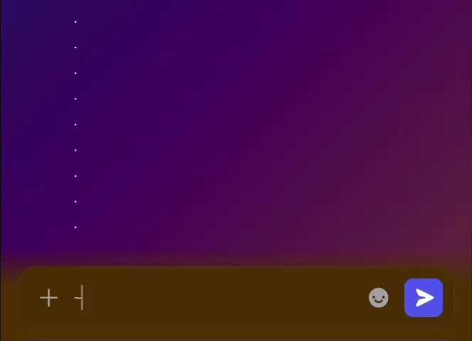
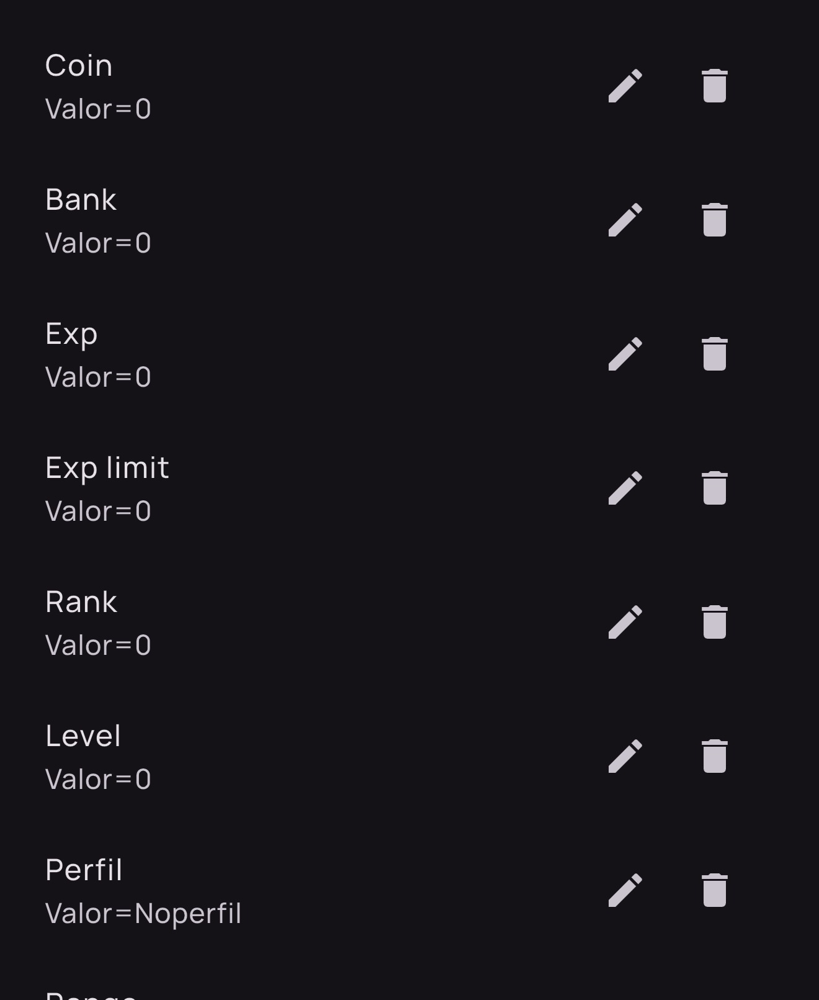
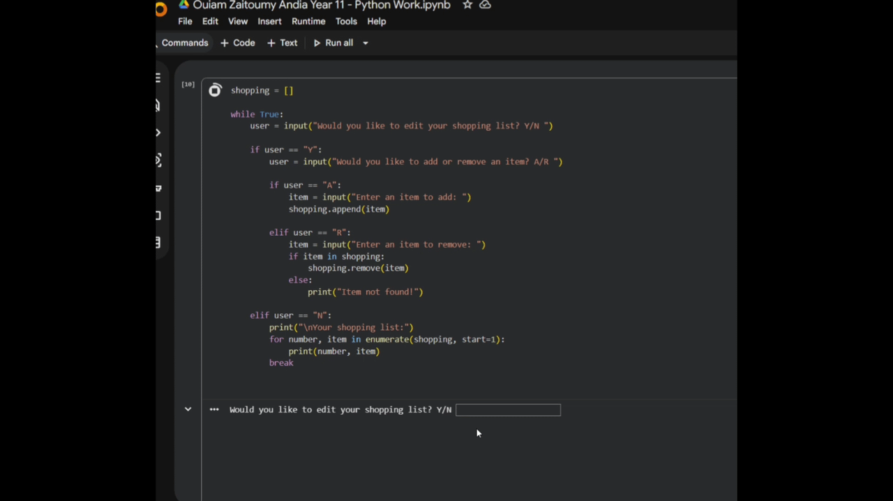
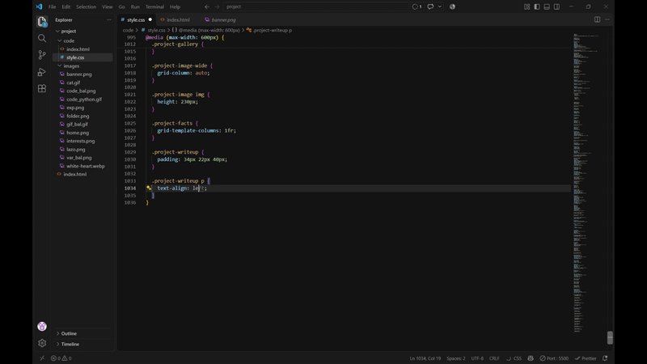

Game Development
I am developing my own mini-game app, starting with a 2D pixel-art game and later exploring 3D experiences.
01 - Get to know me "I'm a curious, creative and ambitious individual who enjoys exploring ideas and understanding how they can be transformed into something meaningful. I have always been drawn to creativity and the process of developing concepts, finding solutions and bringing ideas to life. My academic journey has helped me develop a broader understanding of the world around me. Through studying Business, I have become increasingly interested in how organisations operate, how people make decisions and how innovative ideas can develop into successful products and services.
Outside the classroom, my experiences have allowed me to develop independence, communication and problem-solving skills. I also enjoy taking initiative and exploring things independently, which is one of the reasons I decided to create this portfolio.
I see myself as someone who is constantly learning, experimenting and looking for opportunities to grow. This website represents my journey so far, bringing together my experiences, achievements, projects and the ideas I hope to develop in the future."

Curiosity sparks ideas, creativity gives them shape, and determination brings them to life.
Currently studying a Pearson BTEC Level 3 National Extended Diploma in Business.
English (fluent), Spanish (fluent), Italian (intermediate).
Creative thinking, communication, problem-solving, adaptability and independent learning.
Business development, technology, marketing and innovation.
I enjoy taking initiative, exploring new ideas and developing practical solutions to challenges.
To continue developing my knowledge and explore opportunities where business, creativity and technology come together.
My interests are centred around creativity, technology and understanding how things work. I enjoy exploring ideas, discovering how different systems operate and finding ways to turn concepts into something practical. I am particularly interested in the relationship between engineering and technology, as both involve problem-solving, innovation and the development of ideas that can have a real impact.
I have always been fascinated by the process of creating things and understanding how they work. I enjoy thinking about how different components come together, how objects are designed and how existing ideas can be improved. What interests me about engineering is the combination of creativity, technical understanding and problem-solving. I find the idea of developing something from an initial concept into a functional product particularly exciting. I would like to explore how engineering principles are applied in real-world situations and how new designs and technologies can improve everyday life.
Technology is another area I am increasingly interested in, particularly programming and software development. I enjoy the idea that coding allows people to transform their ideas into something interactive and functional, from websites and applications to more complex digital systems. Creating this portfolio has given me an opportunity to experiment with coding and experience how an idea can gradually become a finished product. It has made me more curious about what happens behind the screen and how software is developed. In the future, I would love to become involved in developing digital products and technologies, continuously improving my technical knowledge and learning how to build more complex projects.
Creativity is an important part of how I approach new challenges. I enjoy imagining possibilities, experimenting with different approaches and finding original ways to develop an idea. What motivates me most is seeing the results of that process. I find it rewarding when something I have imagined starts becoming real, especially when I can understand how it was created and how its different elements work together. I believe creativity and technical knowledge complement each other, as innovative ideas need both imagination and practical development to become successful. I would like to continue exploring how creative thinking can contribute to engineering and technological innovation.
Studying Business has also influenced the way I think about technology and innovation. I am interested in how organisations develop new products, identify opportunities and use technology to improve their operations. I find the connection between technical development and commercial success particularly interesting, as creating something innovative is only one part of the process; understanding its purpose, audience and potential is equally important. I am also interested in international opportunities and how technology connects businesses and people across different countries. In the future, I would love to build a career that allows me to work on innovative projects, explore different environments and gain international experience.
I have ambitious goals for my future and want to continue challenging myself academically and professionally. I hope to develop a strong understanding of engineering and information technology, particularly in areas involving software development, innovation and the creation of new products. I would love to become one of the people responsible for developing the technologies and ideas that shape the future. Most importantly, I want to keep learning, aim higher and turn my curiosity into practical knowledge and meaningful achievements.
My interest in coding began through an unexpected experience. A friend introduced me to Discord bots and showed me how commands could be used to manage and customise servers. I became fascinated by how these commands worked and started setting up my own servers, eventually taking on administrative responsibilities in several communities.
My curiosity soon developed into experimentation. I decided to create my own Discord bot using Bot Designer for Discord (BDFD), where I began developing commands and interactive features. One of my favourite projects was creating a mini-game with a virtual currency system. For example, users could type a fishing command to receive random rewards, collect currency and use it to purchase items from a virtual shop. What excited me most was being able to create something from scratch and watch my ideas become functional through programming.
This experience encouraged me to explore coding further, which led me to choose GCSE Information Technology. I wanted to develop my understanding of programming while learning more about how computers work. During my studies, I explored computer hardware and systems alongside practical programming, and began experimenting with Python. I created basic programs, including a calculator and a shopping basket, which helped me develop my initial programming knowledge.
Although my GCSE experience did not turn out exactly as I had hoped, it did not completely remove my interest in technology. I had discovered that I particularly enjoyed the practical side of computing: experimenting, creating commands, solving problems and seeing the results of my work.
Although I had developed an interest in programming, I had not fully explored how far these skills could take me. This changed when I started visiting universities and attending course presentations to explore my options for higher education. Among the subjects I discovered, Engineering and Computer Science particularly caught my attention.
During one of the university demonstrations, I saw a small car designed to follow a black line using programming and engineering principles. I was fascinated by how something that appeared so simple could involve different technologies working together to produce a functional result. It immediately made me curious about how the car recognised the line, how the programming controlled its movements, which programming languages were involved and how all its components were connected.
What excited me most was realising that coding could extend far beyond writing commands on a screen. It could be used to develop physical objects, create interactive systems and bring much more complex ideas to life. I immediately began imagining what I could create myself, from the design and appearance of a product to the technology that would make it work.
This experience changed the way I viewed my future. It brought together my interest in programming with my creative side and introduced me to possibilities within engineering that I had not previously considered. I realised that I wanted to understand not only how technology works, but also how to design, develop and contribute to creating it.
After discovering my interest in Engineering and Computer Science, I realised that I wanted to develop my technical knowledge further rather than rely solely on what I had learned at school. Although I had previously experimented with Python, I recognised that I needed to revisit the fundamentals and strengthen my understanding if I wanted to pursue programming in the future.
I began researching ways to gain practical experience in IT and explored online work experience opportunities, including Amazon's virtual IT work experience programme, which introduced me to how technology operates within a large organisation. I also started revisiting programming independently, researching different concepts and developing small projects to improve my understanding.
As I became more confident, I began exploring website development. I experimented with creating websites and took on projects for streamers, while also collaborating with others on small game-related projects. These experiences allowed me to explore different aspects of development, from turning visual ideas into website layouts to understanding how code makes digital features function.
One of the most rewarding parts of this journey has been seeing my own ideas become something that other people can actually use. Developing this portfolio is another example of that process. I have been able to experiment with design, structure and functionality while continuously learning and improving my work.
This independent learning has strengthened my motivation to pursue Engineering and IT. It has taught me that developing technical knowledge requires curiosity, patience and a willingness to experiment, make improvements and keep learning beyond the classroom.
While studying my BTEC Level 3 Extended Diploma in Business, I began developing a different perspective on how technology contributes to the success of modern organisations. I became increasingly interested in understanding what makes companies successful and how factors such as technology, marketing, financial planning, product quality and customer experience influence their performance.
I started recognising that creating an innovative product or developing useful technology is only one part of the process. Businesses also need to understand their customers, manage their resources, make informed financial decisions and communicate the value of their products effectively. This made me realise how closely business and technology are connected.
Rather than viewing my Business studies as separate from my interest in Engineering and IT, I began seeing them as complementary areas of knowledge. Understanding the commercial side of innovation has helped me appreciate how technical developments can be transformed into products and services that meet real needs.
I hope to carry this understanding into my future studies and career, combining technical knowledge with commercial awareness to contribute to the development of useful, innovative and successful products.
Working at Hamleys through Buzz Retail Ltd has allowed me to gain experience in a professional retail environment while continuing my education. Beyond my daily responsibilities, I have taken an interest in understanding how the business operates, particularly the relationship between product quality, pricing, promotions and customer decisions.
I have become more aware of how businesses present their products, attract customers and respond to changing consumer interests. I have also had opportunities to develop my communication, teamwork and adaptability through interacting with customers and working alongside colleagues.
I see this experience as an opportunity to apply concepts from my Business studies to real situations while developing a better understanding of commercial operations and the financial considerations behind everyday business decisions.
My five-day work experience placement at Marks & Spencer introduced me to a professional retail environment and provided an opportunity to develop my understanding of workplace responsibilities. I gained insight into the daily operations of a retail business and the importance of teamwork, organisation and customer service.
The experience helped me become more familiar with professional expectations and understand how different responsibilities contribute to the overall operation of a business. It was an important early introduction to the working environment and encouraged me to continue gaining practical experience alongside my education.
Throughout my education, independent learning and professional experiences, I have developed skills that I hope to continue strengthening as I progress towards higher education.
My exploration of programming has introduced me to Python, Discord bot development and website creation. Through experimenting with different projects, I have developed an interest in understanding how digital systems function and how code can be used to create practical solutions.
I enjoy approaching challenges with curiosity and exploring different ways to reach a solution. Whether developing a new idea, experimenting with code or designing a website, I find it rewarding to combine creativity with logical thinking.
Working in retail and collaborating on personal projects have helped me understand the importance of communicating clearly, sharing ideas and working effectively with others. I have also developed greater confidence in adapting to different situations and responsibilities.
One of the most important skills I have developed is the ability to take initiative in my own learning. When I became interested in programming again, I independently researched concepts, revisited Python and explored opportunities to gain further experience. This taught me the importance of persistence and continuously developing my knowledge.
I have ambitious goals for my future and want to challenge myself academically and professionally. I hope to pursue higher education in Engineering and Information Technology, where I can strengthen my technical foundations and explore areas such as software development, engineering design and technological innovation.
In the long term, I would love to become involved in developing new technologies and creating products that combine functionality, creativity and innovation. I am particularly motivated by the possibility of contributing to projects that turn ideas into real solutions. I want to continue learning, exploring international opportunities and developing the knowledge and experience needed to make a meaningful contribution to the technology of the future.

Interactive bot previewMy first practical programming project, creating an interactive Discord bot with a virtual economy.


My first practical programming project involved creating and developing my own Discord bot using Bot Designer for Discord (BDFD). I used commands, variables and built-in coding functions to give the bot different features and make it interactive.
The bot included commands for server management and entertainment, allowing users to interact with it through activities such as fishing, collecting virtual currency and purchasing items from a shop. I wanted to create something that people could enjoy using while also providing useful features to help manage a Discord server.
One example of my work is the balance command (~bal), which uses stored variables to display a user's coins and other statistics in an organised format.

Python in Google ColabProgramming exercises that turn Python concepts into practical, interactive applications.
As part of my GCSE Information Technology studies, I began experimenting with Python to develop my programming knowledge and understand how code could be used to solve practical problems.
I worked on different exercises involving variables, user input, calculations, lists, loops and conditional statements. One example was a shopping list program that allowed users to add, remove and display items through an interactive menu. I also experimented with creating simple games, including Number Guessing and Rock, Paper, Scissors, which I played and tested with my friends.
I particularly enjoyed experimenting with different instructions, testing my code and discovering how programming logic could be used to create functional and interactive programs.

Website portfolio previewAn independent portfolio project combining coding, creativity and user interface design.
As I continued exploring programming, I became interested in website development and how code could be used to create interactive and visually appealing digital experiences.
Using Visual Studio Code, I began developing websites by working with HTML to structure content and CSS to control their appearance, layout and design. I experimented with different elements, colours, images, typography and page structures to create websites that were both functional and visually organised.
I have also worked on website projects for other people, including streamers, which allowed me to explore different design requirements and develop my experience further. Some of these projects are private, so I have chosen to showcase my own portfolio as an example of my work.
This website is an independent project where I have been able to bring together my interest in coding, creativity and design. I have developed its different sections, experimented with its layout and styling, and used it as an opportunity to continue improving my web development skills.